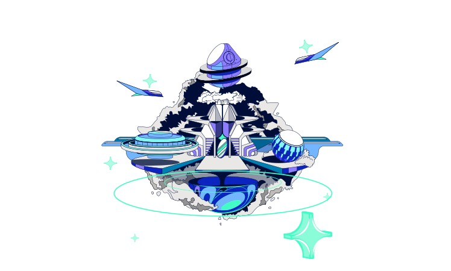
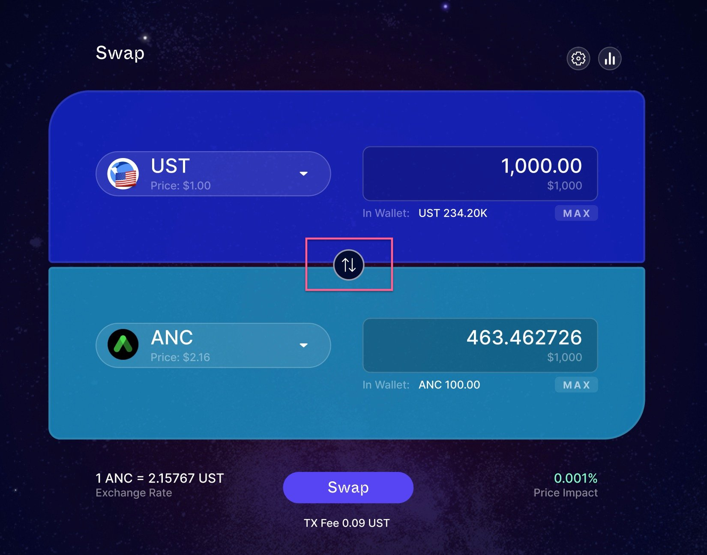
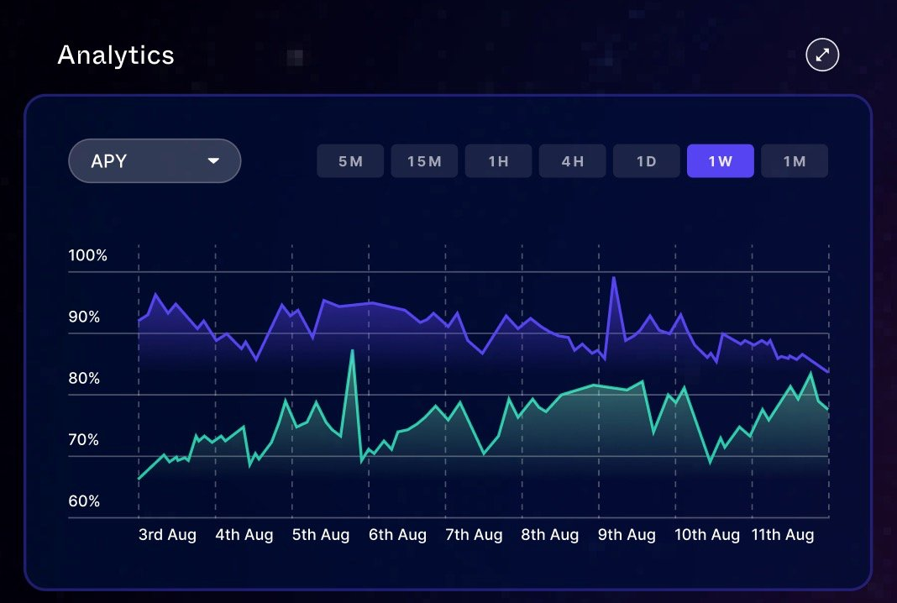
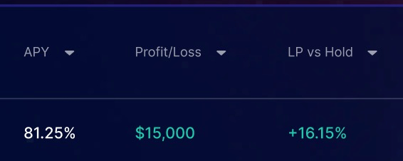
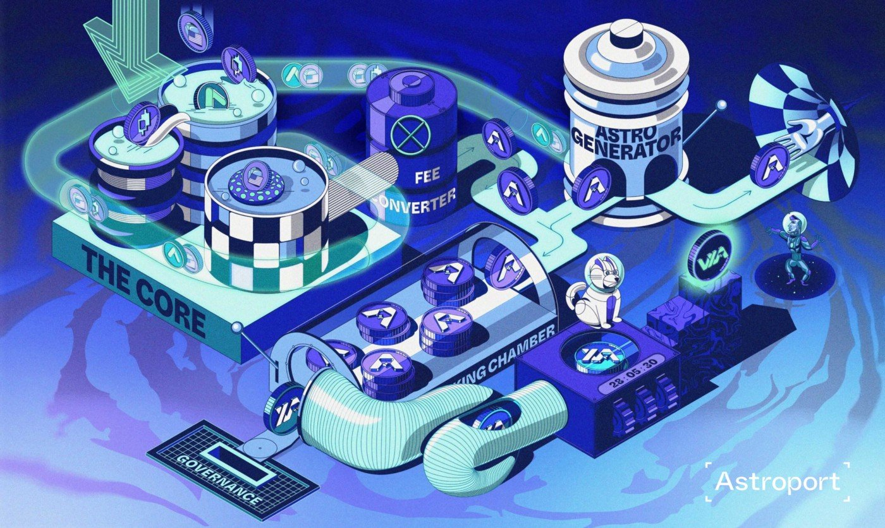

Have you heard of 'The Venice of the Stars'?
Mars is not a service - it’s a protocol... aka a financial primitive. But what does that mean, exactly, and why does it matter?
Yes my ape fren, I'm talking about Astroport. The AMM/DEX on Terra that will launch veeeery soon. So why is it gonna be so important for you, my dear $LUNA fam?

If you're a Terra user, you've probably used the current DEX, Terraswap, which really misses a looooot of stuff. And ser, I'm not talking about all the big brain stuff
that the Astroport "litepaper" talks about (curves and shit). I'm talking about the stuff that matters to you.
What stuff? A better user experience. I'm sure you've got one horror story or two when using our current DEX. The kind of things that make you want to punch the wall.
And sometimes, even the little details, such as switching quickly the token you want to swap.

Perhaps you're tired of having to have one screen open with the charts, and the DEX on the other screen... Perhaps you're tired of not having the full info to make the right decisions (such as even knowing the LPs APY!) Why not have everything in one place?

That's why Astroport will be out of this world: From the most important stuff to the little details, Astroport will be the AMM/DEX we deserve as a community. And perhaps you're like...
..."yeah yada yada Midas, it's all good, but... how do I get it?"
See, they are gonna have three ways to get it:
1. You used TeFi? You voted in governance? provided liquidity? etc? You'll probably get an airdrop.
2. Didn't do that? No worries. Buy LUNA and bLUNA in Terraswap, then put the LP token into Astroport (NFA). You have several days to decide if the conditions are right. If you don't want ape, you take out your lp. If you want ape more, you put more lp.
3. You put UST into the ASTRO-UST pool, once it launches, you'll receive $ASTRO.
Now, I believe Astroport is going to be even bigger than Mars Protocol
It's going to be the entry point for many new Terra users.
And it will be the go-to place for liquidity providers, as it will have the tools and information that they require.

Plus, the art is out of this world.
